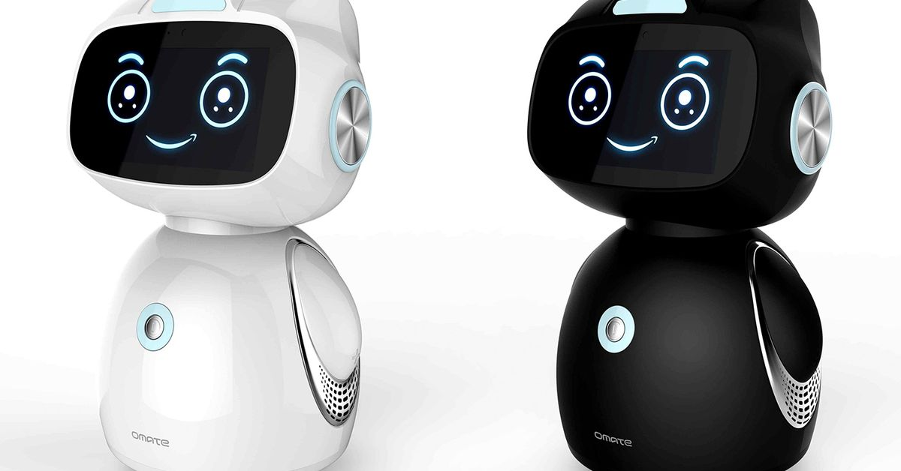

Современные роботы-игрушки сочетают в себе множество инновационных технологий, таких как искусственный интеллект, машинное обучение и сенсорные системы. Сегодняшние интерактивные игрушки могут реагировать на голосовые команды, запоминать действия пользователей и адаптироваться к поведению своего владельца. Такие игрушки стали не просто развлекательными объектами, но и полезными инструментами для развития детей, обучающих их основам технологий и науки в игровом формате.
Интерактивные роботы впервые появились в 1990-х годах. Они были простыми по конструкции, однако пользовались огромной популярностью благодаря своей способности воспроизводить звуки или выполнять базовые действия. Со временем эти игрушки стали более сложными, добавляя новые функции и возможности. Например, появились роботы, которые могли распознавать голосовые команды, выполнять различные движения, а также взаимодействовать с внешними объектами, такими как игрушечные машины или другие роботы.
Технологии быстро развивались, и на сегодняшний день роботы-игрушки оснащены сенсорами, которые позволяют им обнаруживать препятствия, следить за движениями и даже распознавать эмоции человека. Это открывает новые горизонты для использования роботов в различных сферах, включая образование и здравоохранение. Важно отметить, что многие современные роботы могут подключаться к интернету, что позволяет им получать обновления и взаимодействовать с другими устройствами. Это делает их еще более функциональными и доступными для детей и их родителей.
| Название | Характеристики | |
|---|---|---|
| Время работы | Функции | |
| Робот Alpha | 2 часа | Дистанционное управление |
| Робот Beta | 1.5 часа | Голосовое управление |
Робот Gamma  |
3 часа | Обучение программированию |


Роботы-игрушки начали активно развиваться в 1990-х годах. Одна из первых популярных моделей – Furby – стала хитом благодаря своей способности обучаться и адаптироваться к пользователю. Сегодняшние роботы стали гораздо более функциональными, благодаря таким технологиям, как искусственный интеллект и машинное обучение, которые позволяют им предсказывать действия и предлагать новые взаимодействия.
Современные технологии позволяют создавать роботов, которые не только развлекают, но и помогают детям изучать программирование, математику и основы инженерии. Такие игрушки способствуют развитию важных навыков и могут стать интересным и полезным дополнением к образовательному процессу, открывая перед детьми новые горизонты для творчества и изобретательства.
Особое внимание стоит уделить роботам, которые обучают детей принципам работы с искусственным интеллектом. Эти игрушки могут стать важным инструментом для детей, желающих узнать, как создаются программы и алгоритмы, а также для родителей, которые хотят внедрить новые образовательные методы в жизни своих детей.
© 2025 Современные роботы-игрушки